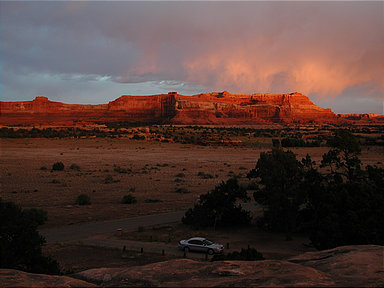 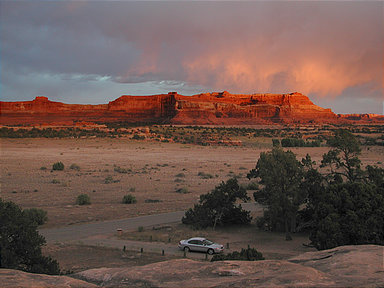
In this tutorial I'll show you how to create a "digital" neutral density (ND) filter for your image in The GIMP. Seasoned photographers are familiar with
the split-ND and graduated-ND filters. These filters have the effect of reducing the exposure over part of the image being taken in either a graduated or abruptly graduated (split) way.
A typical example of the use of a split ND filter would be if you are taking a shot of a sunset. You align the dark part of the filter with the sky
and the clear part with the foreground; the split occurs roughly at the horizon. Used properly, you can meter and expose for the foreground details,
while preserving highlight detail in the sky and clouds.
You could of course use a ND filter with a digital camera. This tutorial is for when you don't have that filter, or can't use a filter.
This procedure works best with an image that does not have the highlights completely burned out or the shadow detail completely reduced to black;
there has to be a reasonable amount of detail to be rescued. It also is mainly suited to images that need exposure adjustment in a graduated linear or split linear fashion
(e.g. sky meets horizon). If the scene you want to shoot has too much dynamic range for your camera, or requires a complex (i.e. non-linear) density mask,
you're better off using the exposure blending technique or the contrast masking technique.
The basic technique is to create a layer above the image that contains a duplicate of the image. Then you can tweak the levels or curves, dodging, burning, etc.
to bring out the highlights or shadows in that layer. Finally, we apply a layer mask to the duplicate layer and insert a gradient black-white or white-black fill.
The original image remains blissfully unchanged on its layer.
Giving credit where credit is due: I did not come up with this method. I adapted it for The GIMP from a Photoshop tutorial on the
luminous-landscape.com web site (great photography web site BTW; I recommend it).
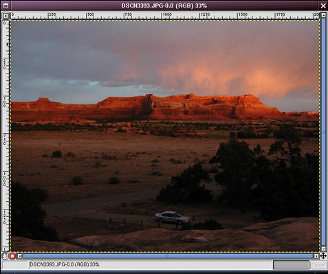
Here is the original example image, loaded into The GIMP.
It is a nice image, but a little too dark for my taste in the foreground. I want to lighten everything reaching back to the base of the cliffs,
but leave the wonderful cliff and sky unchanged.
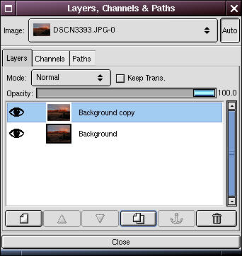
Open the Layers dialog. Right-click on the Background layer and select Duplicate (there is also a button for this in the bottom button bar of the
Layers dialog ( ).
).
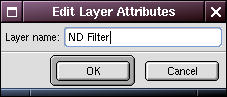 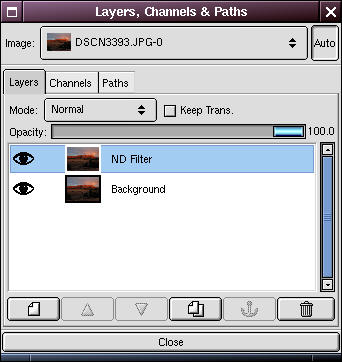
Now double-click on the duplicate layer and rename the new layer "ND Filter". This step is not strictly necessary, but it is helpful to prevent confusion about what is on each layer, especially if you add some additional layers for other editing purposes, or more importantly, if you save the file with layers and open it six months later.
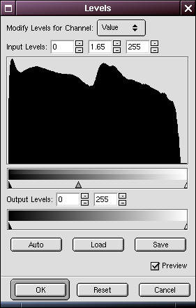

In the Layers dialog, select the ND Filter layer. Go to the image window and perform any editing you want to enhance highlight or shadow detail.
Usually this means using Levels or Curves (I won't go into that here; there are lots of tutorials on the web about that).
You can use selection and masking if you want, but generally it's not necessary. Don't worry about the "good" part of the image; let it go too dark or too light.
Concentrate on the area that needs improvement.
In this case, I've used levels to lighten the whole image: the dark foreground is now about right.
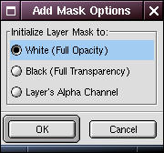 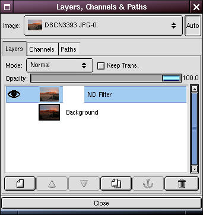
In the Layers dialog, right-click on the ND Filter layer and select "Add Layer Mask". In the Add Mask Options dialog, select white (Full Opacity) and click OK.
 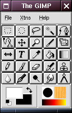
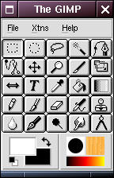
Go up to the main GIMP toolbox and select white for the foreground and black for the background colors. The GIMP normally starts with black as the default foreground color and white as the default background; you can switch them by clicking the little switching arrow.
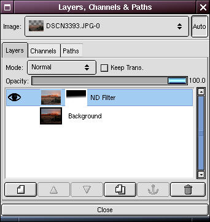 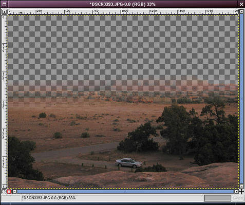
Click the "eye" next to the Background layer in the Layers dialog off; this will help you see the split of the gradient you are going to add.
Now select the gradient fill tool (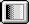). Go back to the image and draw a line in the angle and direction
that you want the graduation from dark to light (on the filter, not the image). See the tips below for hints.
If you didn't get the split at the right place just draw another line; the new gradient fill will replace the old. The gradient fill effects
the transparency of the layer mask: white is opaque, black is transparent, and anything in between is some degree of translucent.
You want the ND Filter layer to become transparent just at the boundary of the "good" part of the original image (in this case, the cliffs and sky).

Click the "eye" next to the Background layer in the Layers dialog back on. Behold: your image with the filter applied.
Click the "eye" next to the ND Filter layer in the Layers dialog on and off to quickly view the effects with and without the filter.
The one on the left is the original. The right image is with the filter.
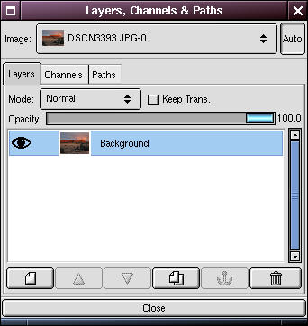
You'll have to flatten the image if you are saving it to a typical image format like TIFF or JPEG (but not if you are saving to the GIMP's native XCF format). To do that, right-click on the image and select Layers/Flatten Image.
- The length of the line that you draw with the gradient fill tool determines how "graduated" the ND filter will be. If you want a "split" filter, draw a short line; if you want a smooth, graduated filter, draw a long line. You will need to experiment to get a feel for it.
- Double-click on the gradient fill tool to see the options available when you fill your layer mask. In particular, you may want to experiment with the Opacity and/or Mode parameters of the fill. You can also choose gradient fills other than Linear to get odd ND filter patterns (e.g. Radial, etc.).
- You can change the transparency of the ND Filter layer using the Opacity slider in the Layers dialog. This reduces the effect of the filter.
- You can experiment with the layer mode of the ND Filter layer by choosing modes other than Normal (e.g. Multiply), in the "Mode" drop-down box in the Layers dialog.
- I find this technique works generally best with rescuing shadows, rather than highlights. This is generally because it seems to be easier to burn out the highlights either in taking the image, or scanning it. There is an old adage about transparency film that confirms this: "expose for the highlights". Of course if you are using a real split ND filter you'd expose for the shadow detail and use the dark part of the filter to capture the highlights.
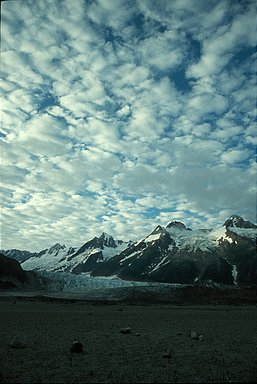 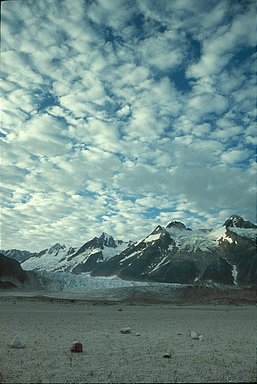
Original image (left image).
With a nd filter as described above (right image).
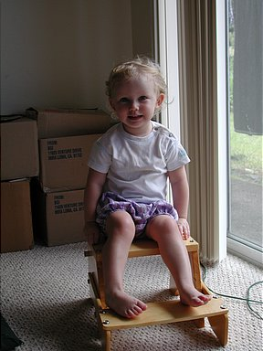 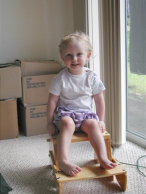
Original image (left image).
With digital nd filter (right image).
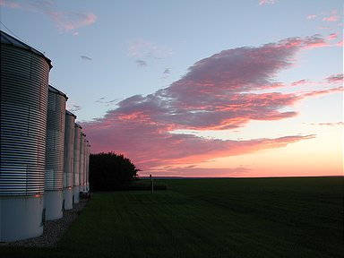 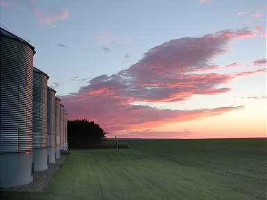
Original image (left image).
With a 2-directional digital nd filter (& perspective correction) (right image).
The original tutorial can be found here.